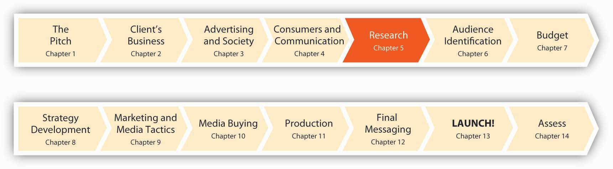

Figure 5.1 Ten Months to Launch!
The more information you have the more effective you can be.
Joe Kessler, partner, SS+K/LA
Joe Kessler understands that knowledge is power. In the ad biz, that power comes from knowing as much as you can about your audience. Who is buying what you’re selling? What are their hot buttons? What are their needs, and which of those needs is your client’s product or service equipped to satisfy? For msnbc.com, SS+K needs to figure out what makes consumers of online news tick. After all, you can create the prettiest ad in the world, but if it doesn’t address the right customer you might as well throw your money out the window (or perhaps buy a lottery ticket). Now that we’ve covered a lot of the fundamentals, it’s time to jump in and get our hands dirty as we learn about msnbc.com and who its customers are.
Enter the research department, or as they are called at SS+K, the Asymmetric Intelligence Unit (AIU). It’s their job to gather consumer intelligence that enables everyone else to make intelligent decisions. So, what’s the best way to do that? “Simple,” you might say. “If you want to know something about somebody, just ask them.” If only the world were that simple! Sometimes we can just ask—but we’re never sure we’re getting the correct answer. Imagine being asked to explain your own habits and preferences: Why do you drink what you do? What makes you splash on a certain fragrance? Tune in a certain TV show? Hang out in MySpace versus Facebook? Your answers might or might not be helpful to a prospective advertiser.
To go beyond simple questions, researchers have many tools in their arsenal. In the 1950s a psychoanalyst interviewed a few men, each for several hours at a time, to find out why they “really” liked to drive cars. He concluded that to a man driving is all about sexual conquest—and Esso’s tagline “Put a tiger in your tank” was born.
Today, we find both extremes in consumer research—from “up close and personal” encounters with consumers in their own homes to massive surveys that yield gigabytes of data. SS+K, as we’ll see, relies on both extremes. For example, The Creative Artists Agency is a part owner of SS+K. CAA’s research division, the Intelligence Group, sponsors a one-day event each month it calls Trend School in both New York and Los Angeles. Each session features presentations either by in-house execs or by outsiders who are into cutting-edge popular culture. At one recent seminar, a panel of über-cool sixteen- to twenty-five-year-olds talked to attendees about how they spend their leisure time (including giving them some quick Nintendo Wii lessons), viral-marketing hits, and the best emerging bands and music trends.Beth Snyder Bulik, “Want to Build a Hipper Brand? Take a Trip to Trend School,” Advertising Age, February 19, 2007, http://www.adage.com (accessed February 19, 2007).
Which technique is the one to use? Here’s a clue: don’t be a hammer in search of a nail, where you doggedly choose one favorite research method no matter what the situation. Let’s see what our options are, and how SS+K made use of them for its client.
After studying this section, students should be able to do the following:
Data is the key to knowing the customer. An advertiser and its agency can obtain this knowledge from two basic kinds of sources, each with respective advantages and disadvantages. Primary dataNew information gathered directly from respondents the company talks to, surveys, or researches. is new information the company gathers directly from respondents the company talks to, surveys, or researches. Primary research focuses specifically upon the issues that need to be answered to develop the campaign. For example, if a company does a telephone survey of consumers’ opinions of the latest ad campaign, that’s primary research. Although primary data can be expensive to collect, it’s often extremely useful because it’s “just what the doctor ordered” to guide the organization’s thinking.
Figure 5.2 Primary versus Secondary Data

In contrast, secondary dataInformation that has already been collected for a previous purpose, often by a third party; an example is government census data. refers to information that has already been collected for a previous purpose, often by a third party that routinely performs such research. For example, government census data is secondary data—the government collects information about citizens’ household size, ages, and incomes for its own purposes. This information is available free in its raw form, and in addition numerous companies “package” it and sell it in various ways to third parties.
Primary data and secondary data can be either quantitativeData or research results expressed in numeric terms such as averages, percentages, or statistics, usually based on a large-scale sample of respondents. (numerical) or qualitativeData or research results obtained by eliciting stories, anecdotes, and descriptive words that indicate the emotions, attitudes, and values associated with a product. (verbal). Quantitative research is usually based on a large-scale sample of respondents and is typically expressed in numeric terms such as averages, percentages, or statistics. The advantage of quantitative research is its precision in providing a specific answer, such as the number of pizzas sold in March or the percentage of people who say they plan to buy a product in the next three months.
Figure 5.3 Qualitative versus quantitative data

Qualitative research is more open ended in eliciting the stories, anecdotes, and descriptive words people have for products or lifestyle attributes. For example, a survey might ask people to describe a product they see in an ad; the advertiser can then analyze the words and emotions those responses contain. Qualitative data tend to be useful for exploratory work and to help “flesh out” the emotions, attitudes, and values behind the numbers.
SS+K’s first step in getting to know msnbc.com was to review the existing research the client had already done around their branding, audience, and features. John Richardson and Michelle Rowley immersed themselves in the data provided in order to understand what msnbc.com’s current research was telling them. By reviewing this research first, they were able to identify what information they still needed so they could gain a better understanding of the brand and the audience.
We broadly describe data along two dimensions: source and type. Source refers to where we obtain the information. Here the important distinction is between primary data that we collect specifically to guide the current campaign and secondary data that already exists in some form. Primary data is often preferable but harder and more expensive to collect; in some cases the information we need is out there if we know where to look. Type refers to the form of the data; is it numerical or verbal or observational? Numerical (quantitative) data can be generalized; we can combine one respondent’s scores with those of many others to obtain a broad (but often shallow) picture. In contrast, verbal or observation (qualitative) data is difficult to generalize because it’s coded in words or based upon a researcher’s subjective impressions. This type of data is useful for generating ideas and drilling down into the underlying reasons for consumers’ reactions to ads or products; it gives us a narrow but deep picture. The ideal is to combine both types of data to yield a broad and deep snapshot of our customers.
Compare primary data to secondary data. Compare quantitative data to qualitative data.
After studying this section, students should be able to do the following:
Sources of primary data include focus groups, customer interviews, and surveys the company conducts to understand the needs, behaviors, and reactions of consumers or other stakeholders such as business customers, vendors, or policymakers. Regardless of the data collection method, researchers conducting primary research need to decide whether to target a random sample of the entire population or to screen their participants according to a demographic, psychographic, or behavioral profile.
After John and Michelle reviewed the existing data, the next step was to speak to the people who know msnbc.com best—their employees. SS+K interviewed the key stakeholders within the organization including the president and representatives from editorial, design, ad sales, and technology. It was important for SS+K to understand how each of them perceived the brand, its challenges, and its opportunities.
After the interviews were conducted, in person by Joe Kessler or Melinda Moore, with Michelle, John, and Amit on the phone in New York taking notes, the AIU team (Michelle and John) started drawing some conclusions from those interviews.
They found that stakeholders agreed on interesting points and what they believed were the differentiators for msnbc.com versus their competitors. The research also showed that they each brought interesting and different ways to communicate this perceived difference. Some suggested approaching the communication through the technological advantages; others suggested touting original and high-quality journalism as the key message. Still other ideas involved better use of NBC personalities and the company’s multimedia experience.
One really encouraging finding from the interviews was the optimism that emerged about the future of the company and the future of the brand. The stakeholders noted that positive elements included the collaborative approaches within their vast organization, the increase in Web traffic, and the new online technologies that enable people to consume more and more information. Blogs, social networks, and other message-board technologies were going to continue to be important as the organization grew.
SurveysThe most common form of quantitative research, consisting of a questionnaire administered by mail or telephone, online, or through face-to-face “intercepts.” are the most common form of quantitative research. They can be conducted by mail or telephone, online, or through “intercepts” such as when a market researcher stops shoppers in a shopping mall to answer a few survey questions. Surveys ask consumers about their activities, interests, and opinions. This often sheds light onto which publications or media the target audience reads or watches, which enables the advertising agency to fine-tune its message.
Mail surveys increasingly are giving way to online questionnaires, because this format allows for instantaneous data collection and analysis (rather than waiting for printed surveys to be mailed and returned). Online questionnaires are also more flexible and cost much less. In both cases, however, while respondents are likely to be more honest because they can participate anonymously, we can’t be 100 percent sure who actually responds to the survey or whether the same person is responding multiple times. To design and administer your own surveys (for free!), check out http://www.surveymonkey.com.
Many online surveys basically reproduce their boring offline counterparts—scroll down the screen and answer a long series of questions by clicking on a number from 1 to 7. But some researchers take advantage of the Web’s unique capabilities as they create research instruments that are more vibrant and engaging for respondents. For example, an online survey could ask you to watch streaming video of different versions of an advertising execution and then prompt you to select the one you like best. Another might show you color pictures of facial expressions, landscapes, or celebrities and ask you to match them up with different brands. In one creative application, an online research company posted a gift finder on its Web site (http://www.youniverse.com). To come up with gift ideas for a friend, the user chooses from sets of photos to answer questions about the person such as “Their favorite color is…” or “Their house looks like.…” The program then matches the answers with everything from gadgets to books. This kind of technology allows clients like MSN, Vodafone, and others to gauge consumers’ reaction to ad campaigns and identify clusters of consumers that respond most positively to different products.Leila Abboud, “Picturing Web Shoppers: Start-Up Taps ‘Visual DNA’ to Gather Data,” Wall Street Journal, January 23, 2007, B9.
Brand Tags, another ingenious application of Web research, shows visitors the logos of big companies and asks them to type in the first word or phrase that pops into their head when they see the logo. Within a few days after it went live, the site attracted more than thirty thousand visitors. Results of these snap reactions are reported as a tag cloudA format for displaying survey results in which the size of a word corresponds to its frequency among responses; a frequently chosen response will appear very large on the screen, while a rarely chosen response will appear very small.—a format in which the size of the word corresponds to its frequency among responses. Frequently submitted words are shown in giant type, while rarely submitted ones look tiny on the screen. This type of data is merely suggestive because we can’t be sure who responds, but it can be an eye opener to advertisers. For example, two popular responses for Wal-Mart are cheap and evil, one of Burger King’s largest tags is fat, while people label Toyota with words like quality and reliable—but also boring.Tom Weber, “What Do People Think About Your Brand? Here’s a New Way to Find Out,” Wall Street Journal Online, May 13, 2008, http://blogs.wsj.com/buzzwatch/2008/05/13/what-do-people-think-about-your-brand-here’s-a-new-way-to-find-out (accessed July 21, 2008).
Telephone surveysA means of soliciting feedback by calling consumers by phone; this technique has lost popularity as respondents screen calls or put themselves on do-not-call lists. offer even more flexibility in questioning, but they suffer from higher cost and often have lower participation because respondents screen calls or put themselves on do-not-call lists. Unfortunately, in recent years telemarketers who masquerade as survey-takers poisoned the well for legitimate research companies; in some cases when they call (usually during dinner!) they lure unsuspecting respondents into answering questions until they reveal toward the end that they’re actually selling something.
However, as mobile phones continue to evolve into the “third screen” for many of us (the first two are the TV and the computer monitor), it’s likely that enterprising researchers will discover new ways to collect people’s feedback via their phones. For example, the startup company Mimieo offers an application that enables a client to capture respondents’ emotional reactions to an ad or product on their iPhones.http://www.mimieo.com/corp/home.aspx (accessed July 21, 2008); Laurie Sullivan, “Marketing Feedback Cards Go Digital via Cell Phones,” Marketing Daily, February 27, 2008, http://www.mediapost.com (accessed February 27, 2008).
Face-to-face interviewsData gathering technique in which a researcher speaks directly with a respondent, asking questions from a predetermined script or letting the respondent say what he or she wants. provide the most flexibility in questioning—it’s clear to the researcher if the respondent is having difficulty understanding the question—but they are time consuming and expensive. They are also less likely to yield truthful results, for two reasons. First, being face to face with the interviewer, respondents may tend to give answers they think the interviewer wants to hear. Second, the interviewer’s biases (none of us is bias free, much as we may wish to think of ourselves that way) may skew the results.
Figure 5.4 Brand Tags

The logic behind deprivation researchTechnique that indicates how loyal consumers are to a brand by taking it away from them. is to figure out how loyal consumers are to a brand by taking it away from them. Dunkin’ Donuts forced a group of its customers to drink Starbucks coffee for a week instead. Verizon Wireless did something even more impressive: the company got a group of teens to give up using cell phones for an entire weekend.
Burger King gets hard-core Whopper fans to go without their burger fixes and keep journals about how they deal with this indignity. This strategy evolved into a recent successful ad campaign the chain’s ad agency Crispin Porter + Bogusky called “Whopper Freakout.” The TV and online ads captured real customers at two Nevada outlets who were informed that the Whopper was no longer on the menu. These were not happy campers: one customer cried, “What are you going to put on the logo now—home of the ‘Whatever we got’?”Suzanne Vranica, “Hey, No Whopper on the Menu?! Hoax by Burger King Captures Outrage,” Wall Street Journal, February 8, 2008, B3. For a closer look at this campaign, check out http://www.whopperfreakout.com/embed.swf.
After conducting the internal stakeholder interviews and reviewing the existing data, msnbc.com and SS+K set out to understand the consumer’s point of view and also to test a few hypotheses they’d drawn based on what they currently knew.
These hypotheses revolved around three themes: (1) functional (What role does online news play in consumer’s lives?), (2) attitudinal (How do consumers feel about msnbc.com?), and (3) thematic (Are there certain categories of news to which consumers look?). It was important to understand what need they currently met in their consumers’ lives, and they designed their questions for the group to explore those areas.
They planned to explore these ideas and flesh them out in focus groups, which we’ll discuss next.
Often, an advertising campaign seeks to understand more subtle (or deeply held) attitudes than a survey can capture. This requires a more exploratory, interactive approach, such as one-on-one interviews between a consumer and a researcher or through a focus groupA small group of consumers, led by a trained facilitator, who discuss what they like and dislike about a product. discussion (a discussion with a small group of consumers, led by a trained facilitator). The professional moderator is crucial to this process, preventing vocal members from overwhelming or dominating the group and effectively handling answers that don’t provide meaningful information or answers that a group member gives who is merely trying to impress other members (yes, this happens a lot!). Focus group discussions usually involve six to ten group members, and discussions are sometimes held in a room with a one-way mirror so that agency executives can watch or videotape the discussion—listening to real people talk about their product can be a real eye-opener for these folks!
For example, the city of Las Vegas decided to use focus groups to get a sense of how it should advertise itself in other countries as a tourist destination. The city worried that its “What happens in Vegas stays in Vegas” campaign in the United States might not play well in countries like Mexico, which has a more Catholic and conservative population. To find out, the city held focus groups with travelers. The results of the focus groups showed that Mexicans were comfortable when the Vegas story lines fit with family customs and did not allude to casual sex. In the United Kingdom, in contrast, focus groups showed that the ad campaign needed more sex, not less, to catch the attention of U.K. audiences (who tend to see more provocative and explicit advertising). About a dozen focus groups of middle- and upper-income British men and women under age fifty-five revealed that the American tagline wasn’t compelling enough for irreverent British tastes. “In the U.S. we think our slogan and ads push the envelope, [but in Britain] for our message to have the same impact we discovered that we need to make it edgier,” said Rob O’Keefe, account director at R&R Partners, the agency for the Las Vegas tourism group. “We need a bolder brand statement articulating that you can do things in Vegas you can’t do anywhere else.”Quoted in Joan Voight, “How to Customize Your U.S. Branding Effort to Work around the World,” Adweek Online, September 3, 2007, http://www.nationaljewelernetwork.com/aw/esearch/article_display.jsp? vnu_content_id=1003634197 (accessed September 3, 2007).
Focus group disadvantages to watch out for are that people may be too tired to think after a hectic day, or that they may say what they think the researcher wants to hear, or that they may even feel pressured to make things up. Also, focus groups take people out of their normal lives and put them into a quiet room, which may lose the context of the real experience. For this reason, individual or group interviews in natural settings may be more desirable. Having a collaborative discussion with consumers in places where people actually use the products in question, such as a bar or laundromat rather than a research lab or an agency’s conference room, may provide more fruitful ideas. Some companies try to get consumers’ input across multiple stages, from focus groups to natural settings like supermarkets (if the product is a packaged food product) to journal entries that consumers record. This multifaceted approach imparts richness to the ideas, rather than just a slice that a phone interview or focus group can yield.
John Mayer
(click to see video)Could you give John Mayer your honest opinion about a new song?
Johanna Steen, who works with Catherine Captain at msnbc.com, was the leader of the focus groups conducted in various locations around the country. Working with the team at SS+K led by Michelle and John, Johanna facilitated the discussion and outlined conclusions so the team could determine what more they knew about the msnbc.com consumers and if they needed anything more.
Finally, qualitative data can be gathered through an ethnographic studyA data gathering method in which a researcher visits a person’s home or business and directly observes how the customer uses a product in a realistic environment., in which a researcher visits a person’s home or business and directly observes how the customer uses a product. For example, when it designed its Quicken software, Intuit sent software engineers to consumers’ businesses to watch how they used accounting software. The program was called “follow me home,” and the reason for watching consumers in their homes was to seek a natural, unscripted setting. Intuit continues to listen to customers through all sorts of channels, including blog posts and feedback buttons on the software itself. The 2006 version of Quicken, for example, included more than 121 customer-recommended improvements.http://www.fastcompany.com/magazine/99/open_customer-intuit.html (accessed on September 9, 2007).
The ad agency Saatchi & Saatchi went even further: when it was working on a new campaign for its client JC Penney, the agency assigned staffers to hang out with more than fifty women for several days. They helped the women clean their houses, carpool, cook dinner, and shop as they observed the women’s behaviors and emotions. This may not be the most glamorous task for the researcher (do they do windows?), but as Saatchi’s global head of strategic planning observed, “If you want to understand how a lion hunts, you don’t go to the zoo—you go to the jungle.”Suzanne Vranica, “Ad Houses will Need to be More Nimble: Clients are Demanding More and Better Use of Consumer Data, Web,” Wall Street Journal, January 2, 2008, B3.
After gaining some insights from the focus groups, Michelle Rowley and John Richardson considered doing ethnographies in order to further understand what really drives the news junkie, but they, along with Catherine Captain, decided to conduct triad interviewsResearch technique in which a moderator interviews three people who have been screened to fit the desired demographic, psychographic, and behavioral profile. instead. Using this technique, a moderator interviews three people who have been screened to fit the desired demographic, psychographic, and behavioral profile. The interviewers gave these respondents a homework assignment before the interviews: they were asked to change their usual routine by trying different news resources before they returned to discuss their experiences together. The inclusion of three similar respondents makes it easier for the researchers to identify shared themes or feelings versus sentiments that one individual may express that are more idiosyncratic and perhaps not as useful. During the triad interviews, the moderator worked with a guide to help her probe for additional details. This guide was agreed upon by the research company, SS+K, and msnbc.com. The results of this final piece of research informed the next steps in the campaign development process, which is the communications brief.
Primary data often is richer and more directly useful, but it also has its downsides. The following are primary data’s advantages:
The following are primary data’s disadvantages:
Primary data refers to information an agency or its client collects to specifically address the current campaign. There are several ways to collect primary data, ranging from one-on-one interviews to large-scale mail or online surveys.
After studying this section, students should be able to do the following:
A lot of secondary data is available from the government, often for free, because it has already been paid for by tax dollars. Government sources of data include the Census Bureau, the Bureau of Labor Statistics, and the National Center for Health Statistics.
For example, through the Census Bureau, the Bureau of Labor Statistics (http://www.bls.gov) regularly surveys consumers to get information on their buying habits. These surveys are conducted quarterly, through an interview survey and a diary survey, and they provide data on consumers’ expenditures, their income, and their consumer unit (families and single consumers) characteristics. For instance, of the total money spent on food per household in 2005 ($5,931), the average family spent $445 on cereals and bakery products that were eaten at home. Looking at the details of this expenditure by race, Whites spent $455 on at-home cereals and bakery products, while Asians spent $492 and African Americans spent $393. Detailed tables of the Consumer Expenditures Reports include the age of the reference person, how long they have lived in their place of residence, and which geographic region (see MSAs in Chapter 6 "Segment, Target, and Position Your Audience: SS+K Identifies the Most Valuable News Consumer") they live in. See http://www.bls.gov/cex for more information on the Consumer Expenditure Surveys.
A syndicated surveyA large-scale research instrument that collects information about a wide variety of consumers’ attitudes and actual purchases; companies pay to access the data they find relevant. is a large-scale instrument that collects information about a wide variety of consumers’ attitudes and actual purchases. Companies pay to access the parts of this large dataset they find relevant. For example, the Simmons Market Research Bureau conducts a National Consumer Survey by randomly selecting families throughout the country that agree to report in great detail what they eat, read, watch, drive, and so on. They also provide data about their media preferences. So, if a client that makes bowling balls, for example, wants to know more about what bowlers do and what TV shows and magazines they prefer, an agency could buy data relevant to this group rather than going out and polling bowlers on its own.http://www.simmonssurvey.com (accessed July 21, 2008).
Companies like Yankelovich Inc. (http://www.yankelovich.com) conduct regular large-scale surveys that track American attitudes and trends. Yankelovich goes deeper than the demographic data the government provides to enable clients to identify consumer beliefs and aspirations as well. For example, the Yankelovich Monitor, which is based on two-hour interviews with four hundred people, looks at changes in American values.
Recent Yankelovich Monitor insights include a multinational Preventative Health and Wellness Report that looks at consumer attitudes and behaviors related to physical, mental, emotional, and spiritual dimensions of health and wellness across seventeen countries. The survey was conducted via forty-minute online questionnaires and answered by twenty-two thousand adults over age eighteen. Another report, called Food for Life, followed up with five thousand consumers who had completed an earlier survey and interviewed them in depth to delve into their attitudes about food with respect to preventive healthcare. For example, most consumers agreed with the statement “If it takes a lot of extra work to prepare it, I won’t eat it, no matter how healthful and nutritious it is.” The implication of this finding to advertisers is that healthful foods need to be convenient. Another finding, “I like to show off how healthfully I eat,” suggests that advertisers should emphasize the “badge value” of their health-related products by making it obvious to others what the person is eating.http://www.iddba.org/0906dig.htm (accessed September 8, 2007).
Other sources of secondary data include reports by Frost & Sullivan, which publishes research across a wide range of markets, including the automotive and transportation and energy industries, or Guideline (formerly FIND/SVP), which provides customized business research and analysis (http://www.guideline.com). Gallup, which has a rich tradition as the world’s leading public opinion pollster, also provides in-depth industry reports based on its proprietary probability-based techniques (called the Gallup Panel), in which respondents are recruited through a random digit dial method so that results are more reliably generalizable. The Gallup organization operates one of the largest telephone research data-collection systems in the world, conducting more than twenty million interviews over the last five years and averaging ten thousand completed interviews per day across two hundred individual survey research questionnaires.http://www.galluppanel.com (accessed July 22, 2008).
So far, we have discussed examples of secondary data from external sources—sources that are external to the advertiser. But secondary data can also come from internal sources, such as a database containing reports from the company’s salespeople or customers, or from previous company research. This is often an overlooked resource—it’s amazing how much useful information collects dust on a company’s shelves! Other product lines may have conducted research of their own or bought secondary research that could be useful to the task at hand. This prior research would still be considered secondary even if it were performed internally, because it was conducted for a different purpose.
Like primary data, secondary data offers pros and cons. The following are its advantages:
The following are secondary data’s disadvantages:
Secondary data is information that already exists in some form; we just have to know how to mine it to get answers we need. The government is a good source for secondary data about consumers and businesses. In addition, many syndicated surveys that private companies conduct provide detailed descriptive information about what people think and what they buy. The client itself is often an overlooked source of data; prior experiences in similar situations or with similar campaigns can help an agency avoid making the same mistakes twice.
After studying this section, students should be able to do the following:
All of the techniques we’ve reviewed so far ask consumers to tell researchers what they think or feel. But as we’ve seen, people sometimes tell researchers what they think they want to hear. Or they give “socially correct” answers rather than their real opinions. For example, a consumer might claim that “safety” is her top criterion when she chooses a baby’s car seat when in fact she is a bargain hunter who shops for the best deal. Many times, this isn’t because people are dishonest or intentionally misrepresent themselves—they may simply not know or may not be aware of their behaviors and motivations.
Have you ever met someone who puts up a good front about being self-assured and confident—but when you go to shake his hand it’s dripping with clammy sweat? Our bodies sometimes tell truths our words deny. One way to address the gap between our internal reactions and what we say is to use physiological tests—technologies that measure consumers’ physical responses, such as eye movements or galvanic skin response—to identify what consumers look at or how they react to an ad. Researchers usually collect physiological data in a lab or test setting, but the increasing portability of the equipment is making it possible to take it out into natural settings as well.
Eye-tracking technologyA physiological measure that tracks where a person’s eyes move and what their pupils do as they look at a particular feature, indicating how engaged a person is or how they react to what they are seeing., as its name implies, tracks where a person’s eyes move and what their pupils do as they look at a particular feature. These tests objectively measure how engaged a person is with an ad and how they react to the images or copy. For example, an abrupt change in a person’s pupil diameter indicates how much mental effort she is exerting. If she’s looking at a Web site, for example, and suddenly her pupil diameter changes, it’s likely she is having difficulty understanding something. What’s more, the eye-tracker can tell exactly where the person was looking, to identify the point of confusion. All of this is more natural and objective than interrupting a person to ask them “How difficult was it for you to complete this task?” or “Did you like Design 1 better than Design 2?”
Advertisers also use the Web to apply eye-tracking technologies that measure how people navigate a Web site, where they look for specific information about an item, how they compare different items, and how they navigate to a shopping cart or other areas of the site. For example, EyeTracking Inc. (ETI) offers its GazeTraces tool that shows the scanning behavior of a person when she looks at a screen display. This helps the advertiser or agency know which features on the page caught the consumer’s attention, which elements she missed, and which elements may have been confusing. ETI uses a patented technique (that the military initially used for training) to estimate cognitive load based on changes in pupil dilation and another tool to estimate the emotional response to television commercials, pictures, and other types of visual displays. ETI will test anywhere from ten to hundreds of people for any given project. The testing usually takes less than thirty to ninety minutes and analysts collect thirty thousand data points each minute.http://www.eyetracking.com/technology/learn (accessed July 22, 2008); Jessica Long, “Eye Tracking Keeps Focus on a Growing Prize,” San Diego Business Journal, July 16, 2007, 1.
Companies like STA Travel use eye-tracking to find out if computer-generated branded content is catching people’s attention in Web sites or in virtual environments like Second Life. Advertisers use gaze trails to determine if viewers look at products placed within TV shows, and if so, for precisely how many seconds. The technology is so precise that it can help an advertiser decide just how to create a set; for example, where would be the best place to put that Coke bottle on the judge’s table during a shoot of American Idol?“Market Research: As Easy as Putting in a Plug?” Marketing Week, September 6, 2007, 29.
Companies like Toyota, Dell, T-Mobile, and Carl’s Jr. use eye-tracking technology to measure the effectiveness of their video-game advertising. A study conducted by Double Fusion (a major player in the video-game advertising space) found that more than 80 percent of gamers notice ads while they play video games. One surprise the study discovered: the size of the ad mattered less than where it was placed. On average, smaller ads placed at eye level attracted a gamer’s attention 38 percent longer than larger, peripheral ads. For example, gamers who played “Rainbow Six” noticed a small Carl’s Jr. ad placed at eye level with the in-game action for 7 percent of the forty-five seconds it was onscreen, but they didn’t notice at all a larger ad for Mazda in the game “Need for Speed” because it was placed toward the top of the screen, away from where they needed to concentrate to play the game.Abbey Klaassen, “Buying In-Game Ads?” Advertising Age, July 23, 2007, 8. Apparently size doesn’t always matter.
Eye Tracker Technology in Use
(click to see video)This eye-tracking study shows a user’s eye movements while playing a Nintendo Wii video game.
Galvanic skin response (GSR)A physiological measure based on the fact that skin’s ability to conduct electricity changes in response to an emotional stimulus like fright, anxiety, or stress. is another physiological measure that advertising researchers have used for a long time. This measure is based on the fact that a person’s skin undergoes a change in its ability to conduct electricity when she experiences an emotional stimulus like fright, anxiety, or stress. Theoretically, the greater the change in electrical resistance, the more positive the subject’s reaction to the stimulus. There is some controversy about the validity of this technique, but proponents believe that GSR, like eye-tracking, is more objective than responses researchers collect during interviews or surveys.Jane Imber and Betsy-Ann Toffler, Dictionary of Marketing Terms, 3rd ed. (Hauppauge, NY: Barron’s Educational Series, 2000).
Sometimes a study will combine several physiological measures to yield better understanding of respondents’ reactions to a commercial or a show. For example, NBC outfitted volunteers with specially designed vests designed to measure their heart rate, respiration, galvanic skin response, and physical activities as they watched a playback of the TV show Heroes. The network wanted to determine if viewers still are affected by commercials that they fast-forward through, even though they aren’t aware of these reactions as the images flicker past. Sure enough, the study found that people’s bodies continue to react to these messages even though they are not consciously aware of these responses. “People did remember brands pretty much to the same extent as they did during real time,” said NBC Universal vice president of news research Jo Holz.Christian Lewis, “Marketers Brainstorm Tactics,” Multichannel News, July 30, 2007, 37.
NeuromarketingA physiological measure that studies the brain’s response to ads and brands using brain imaging techniques such as fMRI. is the study of the brain’s response to ads and brands. Unlike eye-tracking and GSR, neuromarketing techniques are more cumbersome and invasive (they require the volunteer to lie down in a big machine and look at pictures, rather than to sit comfortably in front of a computer or TV).
Because the techniques measure brain activity, not just eye or skin response, they have also sparked more protest. Gary Ruskin of Commercial Alert (a nonprofit organization that argues for strict regulations on advertising) is lobbying Congress and the American Psychological Association to stop the research, fearing that it could eventually lead to complete corporate manipulation of consumers (or of citizens, with governments using brain scans to create more effective propaganda).
Proponents argue, however, that just because advertising influences consumers doesn’t mean that consumers don’t have free choice. The governmental regulatory bodies to which Ruskin appealed decided not to investigate the neuromarketing issue, and more companies are commissioning neuromarketing studies. For example, Chrysler conducted a functional MRI (fMRI) study to test men’s reactions to cars. Results showed that sportier models activate the brain’s reward centers—the same areas that light up in response to alcohol and drugs.http://www.pbs.org/wgbh/pages/frontline/shows/persuaders/etc/neuro.html (accessed September 9, 2007).
Researchers at Carnegie Mellon University used fMRI on study participants who were given $20 to spend on a series of products. If participants made no purchases, they would be able to keep the money. As the products and their prices appeared on the screen, researchers were able to see which parts of participants’ brains were activated. A brain region called the nucleus accumbens, associated with pleasure, would light up in anticipation of purchasing a desired product, while the insula, a region associated with pain, would activate when they saw a product whose price was excessive. Based on the interaction of these two brain regions, the researchers were able to successfully predict whether a given participant would purchase the product or not. When the region associated with excessive prices was activated, participants chose not to buy a product.http://www.neurosciencemarketing.com/blog/articles/brain-scan-buying.htm (accessed September 10, 2007).
As we’ve seen, physiological measures often can be a useful supplement to other techniques. The following are advantages of physiological methods:
But these methods can be cumbersome and complicated. The following are disadvantages of physiological methods:
Our bodies don’t lie. Physiological measures help researchers to identify emotional reactions to advertising messages. They also can assist in the process of tweaking ads or Web sites to insure that the audience homes in on the important contents (for example, by carefully tracking just where people look in an ad). These measures often are too general to be used in isolation; they might identify a negative emotional reaction to an ad but not yield specifics about just which part of the message is a turnoff. Still, they can be a valuable supplement to more traditional measures of advertising effectiveness.
After studying this section, students should be able to do the following:
Research plays a role in each of several phases of a successful campaign or product launch. Michelle and John, the account planners on the msnbc.com account, used the information and learnings from the research to compose the communications briefA written report that forms the basis for an entire ad campaign., which is the basis for the entire campaign. Michelle and John worked closely with the internal team at SS+K as well as with Catherine Captain at msnbc.com to ensure that everyone agreed with their conclusions.
You’ll learn more about the communications brief in Chapter 8 "Create a Strategy: SS+K Puts Its Research to Use as the Agency Creates the Brief", but it’s important to note how these elements build on each other. The creative brief (informed by research) is the jumping-off point for any communications or ideas related to the campaign.
Early on, research can help feed the idea generationPreconcept development phase of the creative process; it involves observing purchase behavior, evaluating brand images and profiling customers to identify unmet needs, changing attitudes, and demographic trends. phase of the creative process. Research conducted during preconcept development can uncover relevant brand messages by observing purchase behavior, evaluating brand images and profiling customers. Research can help identify unmet needs, changing attitudes, and demographic trends.
For example, Chris Hannigan, director of new ventures at Del Monte, said, “We monitor consumer trends closely, and we’re constantly vetting ideas on what will meet consumer needs. We’ll work closely with the R&D team to develop concepts that we think meet the needs. Then we’ll test them with consumers to determine if they’re appealing.”Quoted in Lisa McTigue Pierce, “Del Monte Foods: Revived, Responsive and Rarin’ to Grow,” Food & Drug Packaging 70, no. 1 (2006): 48.
In addition to using traditional research, some agencies will pull together one-time groups, asking people from diverse backgrounds to join in a few hours of brainstorming to generate ideas. For example, Don Carlton, CEO of Paragraph Project, was working on a campaign to make a regional fast-food company iconic in the Pacific Northwest. An iconAn icon in the marketing or advertising context refers to a well-known, enduring symbol of an underlying quality. in the marketing or advertising context refers to a well-known, enduring symbol of an underlying quality—for example, the Nike swoosh or McDonald’s golden arches. As Carlton explained, “In addition to some traditional research, I pulled together people who I thought would have some good ideas about icons: a professor of architecture from the University of Illinois, to talk about iconic buildings; the founder of Second City in Chicago, to talk about iconic comedians; people who worked on iconic movies like ‘Return of the Jedi’ and ‘Rocky IV,’ to talk about iconic movies.…The whole point was to [identify] the qualities of iconic people and things to help this client understand how to represent what the whole region was about in an iconic way.”Quoted in Jennifer Rooney, “Tapping the Brilliance of Ad Hoc Experts,” Advertising Age 77, no. 36 (September 4, 2006): 18.
Movie studios conduct test screenings of their films to generate ideas for marketing campaigns that run upwards of $50 million. For example, First Look president Ruth Vitale did a test screening for A Guide to Recognizing Your Saints (Dito Montiel’s Sundance Film Festival entry starring Robert Downey Jr.). The purpose of the screening was not to change the film but “to have a conversation about: Who’s the primary audience? How do we reach them?” Vitale said. Although First Look screened Saints only once, most studios hold three to five screenings for each film. At a cost of $10,000–20,000 for each screening, one source says, “It is the best money you could spend.”Stephen Galloway, “Test Pattern,” Hollywood Reporter, July 25, 2006, 18.
Research is important in the concept designPhase of the creative process in which the concept is developed and articulated in response to research findings. phase because it helps determine whether a concept is in line with the intended message and what the likelihood is that the concepts will influence the behaviors and attitudes of the intended consumers.
Concept testingPhase of the creative process in which consumers evaluate a new ad or product idea before the advertiser spends large sums of money finishing the product or creating the ad campaign. provides a way to get feedback on an advertisement or a specific new product concept. Concept tests involve asking consumers to evaluate a new ad or new product idea, typically asking them if they understand the message, if the ad gets their attention, and if they would consider buying the product (and if so, how much they would be willing to pay for it). The purpose of the concept test is to gather consumer feedback before the advertiser spends large sums of money finishing the product or creating the ad campaign. Research determines whether the concepts are in line with the intended messages and whether they will influence the intended audience.
For example, Kraft wanted to gauge customer response to its planned “Heavenly Angels” TV and newspaper campaign for its Philadelphia Light Cream Cheese. During pretesting of the newspaper ad concepts, the company got valuable feedback from consumers. Consumers liked the ad’s idea of suggesting Philadelphia Light cheese as an ingredient in cooking, not just as a bread spread. The recipes in the ads were seen as “new news” by consumers. But consumers also had suggestions for improvement: they wanted to see recipes for lighter foods (which would also be “more heavenly”), and they suggested brighter and lighter blue colors for the background, which were more evocative of what they envisioned “heaven” to look like. Kraft made these improvements and enjoyed strong sales results from the campaign: the newspaper ads increased the product’s sales volume by 15 percent, and the combined newspaper and TV campaign generated a 26 percent increase in sales.“Newspaper Advertising: Case Study—Philadelphia Light,” Campaign, January 26, 2007, 10.
While feedback to a concept can sometimes be helpful, it is the brand and the agency experts who are ultimately responsible for deciding whether the campaign works. There is a strong school of thought that opposes concept testing, as we can imagine some of the most brilliant work we’ve seen out there would have been “killed” by a focus group.
At msnbc.com they decided not to test their creative concepts because the brand was making a new statement and everyone involved knew that they had to take a stand. However, there are other situations where a larger consensus is necessary. For example, SS+K’s design team, led by Alice Ann Wilson, collaborated with the creative team Matt Ferrin and Sam Mazur to update the msnbc.com logo. After giving feedback and narrowing it down to a few options, Catherine Captain offered msnbc.com employees a chance to opine and vote on the new identity for the brand. Ultimately, marketers should learn from feedback but rely on their expertise to make the final call.
Defining and targeting your audience is the best way to ensure a match between the company’s product or service and the consumer’s needs. Often, the more a company knows about its audience, the more effective its ads will be—and the company may uncover needs for new products that it didn’t know about. Granular audience profilingResearch method that includes all aspects of demographics as well as psychographic information coupled with media habits across all media channels, with the goal of carving out segments within your audience universe and developing target-specific messaging in the media that each target uses. includes all aspects of demographics (age, gender, income, ethnicity, geography, industry, and job function) as well as psychographic information (interests, behaviors, and values) coupled with media habits across all media channels (print; online ads, searching, blogging, podcasting, social networking; radio; mobile and SMS; billboards; TV; trains, buses, subway). The goal is to carve out segments within your audience universe and develop target-specific messaging in the media that each target uses.
The more information you can provide to the creatives, the better. For example, consider the differences among the consumer profiles for hiking shoes compared to walking shoes compared to casual sneakers. The consumer of hiking shoes tends to be younger, more rugged, and more outdoorsy compared to the others and is likely to read a magazine like Outdoors. The consumer for walking shoes tends to be older than the other two and more affluent; he is concerned about appearance, comfort, and status. The consumer of casual sneakers is more easygoing, less affluent, and more likely to watch TV. The clearer the picture creatives have of their potential customer, the better they can target the advertising. Thus, the walking shoe customer will be more likely to respond to an ad that touts the health benefits of walking than will a casual sneaker customer.
After extensive research and data, SS+K and msnbc.com identified a niche for their product, and a newly defined segment of their audience was born. We’ll learn more about that new audience in Chapter 6 "Segment, Target, and Position Your Audience: SS+K Identifies the Most Valuable News Consumer".
Research provides crucial inputs at several stages of message development. It helps to generate ideas based upon the experiences of real people and how their needs evolve. It provides reactions to concepts so that the agency can choose those that work as it throws a bunch of ideas against the wall to see which stick. And research that profiles potential customers is imperative; insights will help strategists to select the most attractive market and creatives can develop a position for a brand that best meets the needs of that market.
Now that you have read this chapter, you should be able to determine how primary and secondary data are collected and used by advertisers:
Gathering physiological data on consumers can be difficult; however, in the future we may all be providing such data every time we enter a store. Imagine entering a store and having your face “mapped” via an infrared sensor. Your face map is then used to match you against a data bank of shopper profiles suggesting whether or not you are in a mood to buy. Does this sound too futuristic?
Face mapping is currently receiving a lot of attention from a variety of quarters. Security experts tell us that face mapping can alert security services to certain profiled behaviors. Dermatologists say face mapping may provide solutions to long-term skin care. Others say that face mapping can be used to insert a person’s picture in real-time advertisements. That’s right—you’ll be in the ad that you see in the store or are viewing on a screen. You could watch yourself flying a helicopter in a U.S. Army ad, see yourself walking across the graduation stage in a college recruitment ad, or check yourself out as you model the latest fashion that the store has to offer.
Research the subject of face mapping via secondary research sources. Think of a new application (i.e., idea generation) for face mapping and describe it. Describe how you would test to see if your new application might work. What ethical and legal issues might face mapping bring if it was practiced on a large scale? Summarize your thoughts on the application and future of this technique.
How do you illuminate a world that has increasing difficulties with power generation and transmission? As the cost of electricity rises, rural populations the world over have an even greater difficulty obtaining power for their villages and electricity for their homes. Several innovative manufacturers have found ingenious solutions to the problem. Picture a solar-powered twenty-five-watt lantern that could illuminate a small room when suspended from the ceiling or sit on the floor to serve as a personal reading light. Cosmos Ignite Innovations, d.light design, and Phillips have all produced these simple lanterns. Most of these solar “night light” lanterns can shine for about five hours without being recharged. The companies believe that the simple idea of “recharge by day and shine at night” can be learned quickly by villagers and communities. Currently, the companies are shipping lanterns to India, the Middle East, and Africa.
Assume that you have been assigned the task of informing the target markets about the lantern products. Given the limited media resources in the regions, design a communications brief that will accomplish the information distribution objective. Follow the method described in Section 5.5 "Using Research to Guide a Successful Launch" of this chapter. Discuss your ideas with peers. Critique the various briefs.
Do you wear glasses or some other vision-correction device? Supplying eyewear is a huge industry. Many of the companies that manufacture and distribute eyewear products and services have taken their products and messages to the Web. Let’s examine one of these companies—Eye Glass Guide 2.0 at http://www.eyeglassguide.com. Review the various features of the Web site. Take particular interest in the product videos provided. Remember, it is not necessary to fill out any company solicitation information to view the videos.
Once you have reviewed the eyeglassguide.com videos, design a questionnaire for collecting primary data information in one of the product areas (e.g., kids’ eyewear). The research objective of your questionnaire will be to gain information on those who might be willing to establish contact, buy eyewear, or request an appointment via the company’s Web site. Decide what you want to know and how you will find the information. Discuss your questionnaire with peers. Ask for feedback and criticism on your questionnaire’s design.
As the chapter states, “Defining and targeting your audience is the best way to ensure a match between the company’s product or service and the consumer’s needs.” It only makes good sense that a market-oriented company would want to know as much as possible about its target audiences in order to serve them better. Today, technology has the capability to provide an increasing volume of data that allows audience profiling to become more targeted. Technology-driven audience profiling includes demographics, psychographics, multimedia preference, and characteristics studies in its analysis arsenal. From an ad agency or marketing organization perspective, the idea is simple: the more information you can supply to the creatives the better.
OK, so what’s wrong with the picture we just presented to you? There are most likely many faults; however, chief among them are concerns about data collection methods and information security. In other words, there is worry about privacy rights. To investigate this ethical issue, conduct research on the privacy rights of consumers. Specifically, examine privacy rights on the Web and company statements about how consumer information is used. Summarize your findings. Once this is done, summarize your thoughts on how researchers seeking audience profiles can honor consumers’ privacy rights and still conduct meaningful research.